一般化線形モデルによるデータの近似
通常の線形回帰を使用すると、直線、またはパラメーターにおいて線形である任意の関数を、正規分布した誤差を伴うデータに近似させることができます。これは最もよく使用されている回帰モデルですが、必ずしも現実的なモデルであるとは限りません。一般化線形モデルは、線形モデルを 2 つの方法で拡張したものです。第 1 に、リンク関数を導入することで、パラメーターにおける線形性の仮定が緩和されます。第 2 に、正規分布以外の誤差分布をモデル化できます。
このデモでは、Statistics Toolbox™ と関数 glmfit および glmval を使用して、一般化線形モデルの近似と評価を行う方法を示します。
目次
一般化線形モデル
回帰モデルは、応答変数 (一般に y で示される) の分布を、1 つまたは複数の予測変数 (一般に x1、x2 などで示される) を使用して定義します。最もよく使用されている回帰モデルである一般線形回帰は、正規確率変数として y をモデル化します。この変数の平均は予測子の線形関数 b0 + b1*x1 + ... であり、この変数の分散は定数です。予測子 x が 1 つのみという最も単純なケースでは、このモデルは、各点の周囲にガウス分布を持つ直線として表されます。
mu = @(x) -1.9+.23*x; x = 5:0.1:15; yhat = mu(x); dy = -3.5:.1:3.5; sz = size(dy); k = (length(dy)+1)/2; x1 = 7*ones(sz); y1 = mu(x1)+dy; z1 = normpdf(y1,mu(x1),1); x2 = 10*ones(sz); y2 = mu(x2)+dy; z2 = normpdf(y2,mu(x2),1); x3 = 13*ones(sz); y3 = mu(x3)+dy; z3 = normpdf(y3,mu(x3),1); plot3(x,yhat,zeros(size(x)),'b-', ... x1,y1,z1,'r-', x1([k k]),y1([k k]),[0 z1(k)],'r:', ... x2,y2,z2,'r-', x2([k k]),y2([k k]),[0 z2(k)],'r:', ... x3,y3,z3,'r-', x3([k k]),y3([k k]),[0 z3(k)],'r:'); zlim([0 1]); xlabel('X'); ylabel('Y'); zlabel('Probability density'); grid on; view([-45 45]);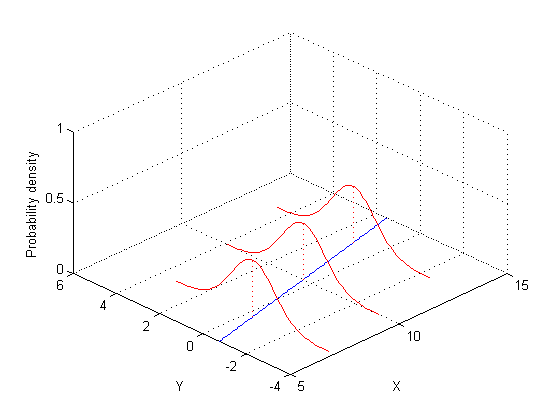
一般化線形モデルでは、応答の平均は、予測子の線形関数 g(b0 + b1*x1 + ...) の単調非線形変換としてモデル化されます。変換 g の逆は、"link" 関数として知られています。例として、logit (シグモイド) リンクや log リンクが挙げられます。また、y が、2 項分布やポワソン分布といった非正規分布を持つこともあります。たとえば、log リンクと単一の予測子 x を含むポワソン回帰は、各点の周囲にポワソン分布を持つ指数曲線として表すことができます。
mu = @(x) exp(-1.9+.23*x); x = 5:0.1:15; yhat = mu(x); x1 = 7*ones(1,5); y1 = 0:4; z1 = poisspdf(y1,mu(x1)); x2 = 10*ones(1,7); y2 = 0:6; z2 = poisspdf(y2,mu(x2)); x3 = 13*ones(1,9); y3 = 0:8; z3 = poisspdf(y3,mu(x3)); plot3(x,yhat,zeros(size(x)),'b-', ... [x1; x1],[y1; y1],[z1; zeros(size(y1))],'r-', x1,y1,z1,'r.', ... [x2; x2],[y2; y2],[z2; zeros(size(y2))],'r-', x2,y2,z2,'r.', ... [x3; x3],[y3; y3],[z3; zeros(size(y3))],'r-', x3,y3,z3,'r.'); zlim([0 1]); xlabel('X'); ylabel('Y'); zlabel('Probability'); grid on; view([-45 45]);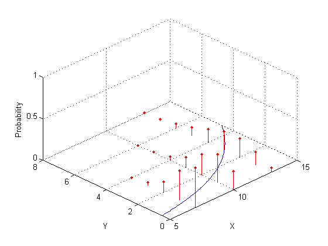
ロジスティック回帰の近似
この例には、燃費テストで不合格になった、さまざまな重量の自動車の割合をモデル化するのに役立つ実験が含まれています。データには、重量、テストした自動車の台数、および不合格台数の観測値が含まれています。
% A set of car weights weight = [2100 2300 2500 2700 2900 3100 3300 3500 3700 3900 4100 4300]'; % The number of cars tested at each weight tested = [48 42 31 34 31 21 23 23 21 16 17 21]'; % The number of cars failing the test at each weight failed = [1 2 0 3 8 8 14 17 19 15 17 21]'; % The proportion of cars failing for each weight proportion = failed ./ tested; plot(weight,proportion,'s') xlabel('Weight'); ylabel('Proportion');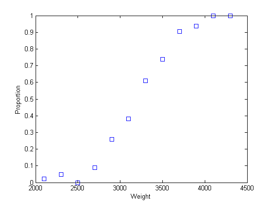
このグラフは、不合格の自動車の割合を重量の関数として表したものです。不合格台数は、重量と共に値が大きくなる確率パラメーター P を使用して 2 項分布から得られると仮定するのが合理的です。しかし、どの程度正確に P が重量に比例すべきでしょうか。
これらのデータへの直線の近似を試みることができます。
linearCoef = polyfit(weight,proportion,1); linearFit = polyval(linearCoef,weight); plot(weight,proportion,'s', weight,linearFit,'r-', [2000 4500],[0 0],'k:', [2000 4500],[1 1],'k:') xlabel('Weight'); ylabel('Proportion');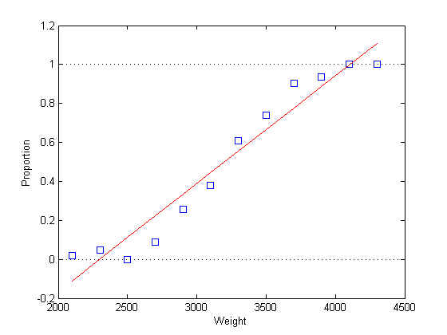
この線形近似には、以下の 2 つの問題があります。
1) 線が予測する割合が、0 未満の範囲と、1 を超える範囲である。
2) 割合には必ず境界があるため、割合が正規分布していない。これは、単純な線形回帰モデルの近似に必要とされる仮定の 1 つに違反します。
高次多項式が役立つように思われます。
[cubicCoef,stats,ctr] = polyfit(weight,proportion,3); cubicFit = polyval(cubicCoef,weight,[],ctr); plot(weight,proportion,'s', weight,cubicFit,'r-', [2000 4500],[0 0],'k:', [2000 4500],[1 1],'k:') xlabel('Weight'); ylabel('Proportion');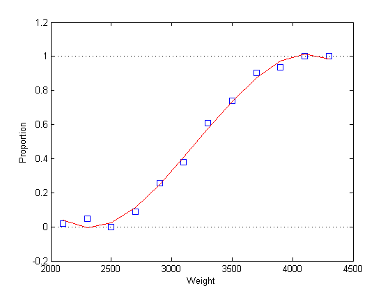
しかし、この近似にも同様の問題があります。グラフからわかるように、近似された割合は、重量が 4000 を上回ると下がり始めます。実際、この割合は、重量値がさらに増えると負になります。これも当然ながら、正規分布の仮定に違反します。
高次の多項式の代わりに glmfit を使用する方が、ロジスティック回帰モデルを近似するのに適しています。ロジスティック回帰は一般化線形モデルの特殊なケースであり、以下の 2 つの理由から、これらのデータにとっては線形回帰よりも適切です。第 1 の理由は、2 項分布に適した近似手法が採用されているからです。第 2 の理由は、予測される割合がロジスティック リンクによって範囲 [0,1] に制限されるからです。
ロジスティック回帰の場合は、予測子行列と、不合格台数を含む列およびテストした台数を含む列をそれぞれ 1 つ持つ行列を指定します。また、2 項分布と logit リンクも指定します。
[logitCoef,dev] = glmfit(weight,[failed tested],'binomial','logit'); logitFit = glmval(logitCoef,weight,'logit'); plot(weight,proportion,'bs', weight,logitFit,'r-'); xlabel('Weight'); ylabel('Proportion');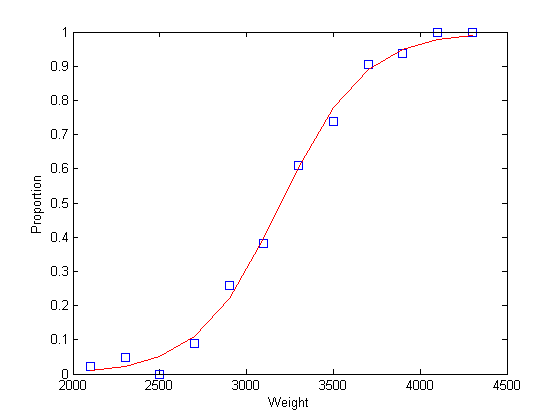
このプロットで示されているように、近似された割合は、重量の増減に伴って 1 または 0 に近づく漸近線となります。
モデル診断
glmfit 関数は、近似を調べモデルをテストするための出力を多数備えています。たとえば、2 つのモデルの偏分値を比較することで、二乗項によって近似が大幅に向上するかどうかを判断できます。
[logitCoef2,dev2] = glmfit([weight weight.^2],[failed tested],'binomial','logit'); pval = 1 - chi2cdf(dev-dev2,1)
pval =
0.4019
p 値が大きいことからわかるように、これらのデータについては、2 次項によって近似が大幅に向上することはありません。2 つの近似のプロットは、これらの近似に大差がないことを示しています。
logitFit2 = glmval(logitCoef2,[weight weight.^2],'logit'); plot(weight,proportion,'bs', weight,logitFit,'r-', weight,logitFit2,'g-'); legend('Data','Linear Terms','Linear and Quadratic Terms','Location','northwest');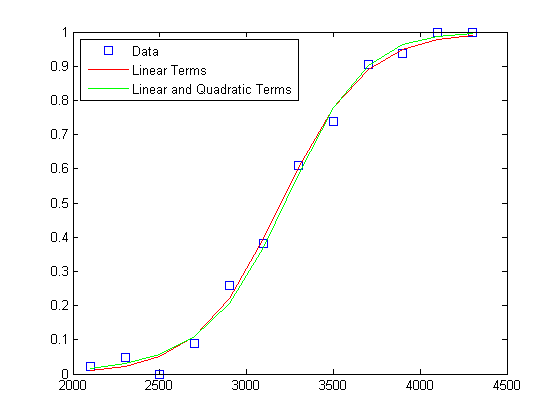
ピアソン残差の確率プロットを調べることで、近似の適合度を確認できます。これらの残差は正規化されているため、モデルがデータへの適切な近似である場合に、概ね標準正規分布を持ちます (この標準化がなければ、残差はさまざまな分散を持つことになります)。
[logitCoef,dev,stats] = glmfit(weight,[failed tested],'binomial','logit'); normplot(stats.residp);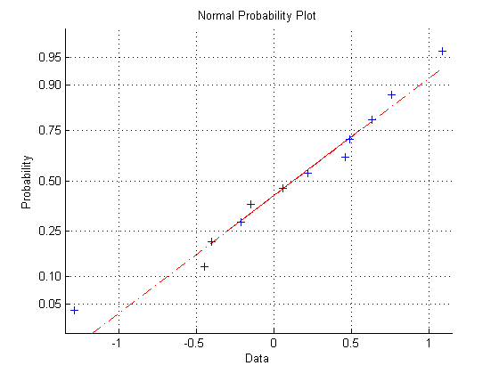
この残差プロットは、正規分布と十分適合していることを示しています。
モデル予測の評価
満足できるモデルが得られれば、それを使用して、信頼限界の計算などの予測を行うことができます。ここでは、100 台のうち何台の自動車が、4 つの重量での燃費テストに不合格となるかを予測します。
weightPred = 2500:500:4000; [failedPred,dlo,dhi] = glmval(logitCoef,weightPred,'logit',stats,.95,100); errorbar(weightPred,failedPred,dlo,dhi,':');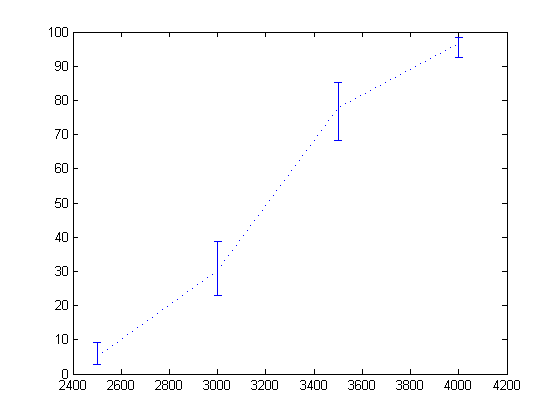
2 項モデル向けのリンク関数
glmfit がサポートする 5 つの分布それぞれについて、基準 (既定) リンク関数が存在します。2 項分布の場合、基準リンクは logit です。また、2 項モデルに適したリンクが他にも 3 つあります。これら 4 つのリンクすべてが、平均応答を区間 [0, 1] 内に保ちます。
eta = -5:.1:5; plot(eta,1 ./ (1 + exp(-eta)),'-', eta,normcdf(eta), '-', ... eta,1 - exp(-exp(eta)),'-', eta,exp(-exp(eta)),'-'); xlabel('Linear function of predictors'); ylabel('Predicted mean response'); legend('logit','probit','complementary log-log','log-log','location','east');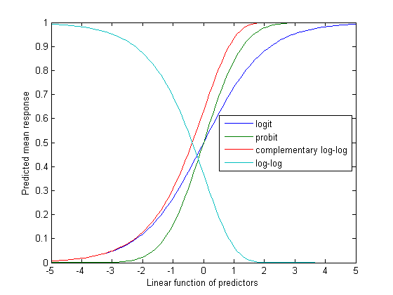
たとえば、probit リンクを使用した場合の近似と logit リンクを使用した場合の近似を比較できます。
probitCoef = glmfit(weight,[failed tested],'binomial','probit'); probitFit = glmval(probitCoef,weight,'probit'); plot(weight,proportion,'bs', weight,logitFit,'r-', weight,probitFit,'g-'); legend('Data','Logit model','Probit model','Location','northwest');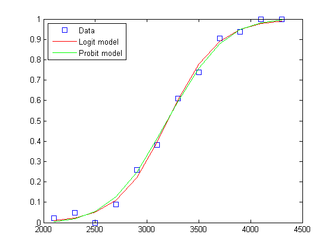
多くの場合、これら 4 つのリンク関数をデータによって区別するのは難しいため、どのリンク関数を選択するかは、理論的な理由に基づいて決められます。